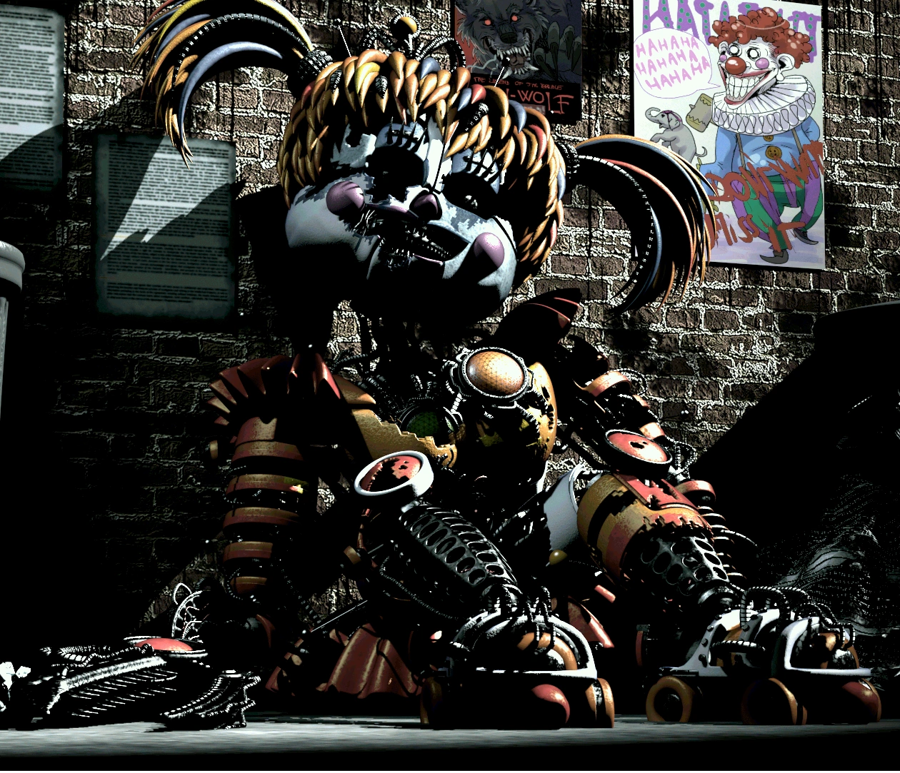
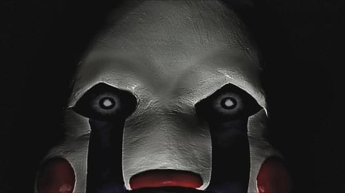
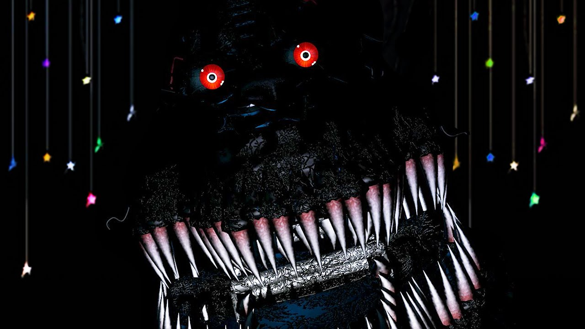

Use of a mark in Bootstrap
Use ctrl + p to open the Print dialog box
Possessed by Elizabeth Afton and made up of Ennard's exoskeleton
Possessed by Charlotte
William Afton's nightmare physical form
Possessed by Cassidy and Crying Child

Column Right
Five Nights At Freddy's Animatronic
Marionette is an animatronic from Five Nights at Freddy's 2. He jumpscares you when you forget to wind up the music box in the camera.
The Crying Child
Golden Freddy is an animatronic who is in the first video game. This animatronic is the first out of many with spring locks, which was used to cause the bite of '83. A crying child, who was the son of the maker of the animatronics, was bullied and put into Golden Freddy's mouth, and his tears tampered with the spring locks, which made Golden Freddy's mouth SHUT on his head, killing the child, and putting his soul into the animatronic suit.
About Me My Pets Client FeedbacksFive Nights At Freddy's 4
Nightmare is in the fourth Five Nights At Freddy's video game. He, and other nightmare characters were created to scare the Crying Child, who was not in Golden Freddy at the time, to keep him away from the other animatronics because his dad was trying to protect him.
Charlotte
Marionette is an animatronic from Five Nights at Freddy's 2. He jumpscares you when you forget to wind up the music box in the camera.
About Me My Pets Client FeedbacksWilliam
Nightmare is in the fourth Five Nights At Freddy's video game. He, and other nightmare characters were created to scare the Crying Child, who was not in Golden Freddy at the time, to keep him away from the other animatronics because his dad was trying to protect him.
About Me My Pets Client Feedbacks
Susie
Withered Chica is supposedly the first of the animatronics. She has witnessed everything. After shhe was created, she witnessed every killing and possession after her. The Chica shell is possessed by Susie,
About Me My Pets Client Feedbacks
The Crying Child
Golden Freddy is an animatronic who is in the first video game. This animatronic is the first out of many with spring locks, which was used to cause the bite of '83. A crying child, who was the son of the maker of the animatronics, was bullied and put into Golden Freddy's mouth, and his tears tampered with the spring locks, which made Golden Freddy's mouth SHUT on his head, killing the child, and putting his soul into the animatronic suit.
About Me My Pets Client Feedbacks